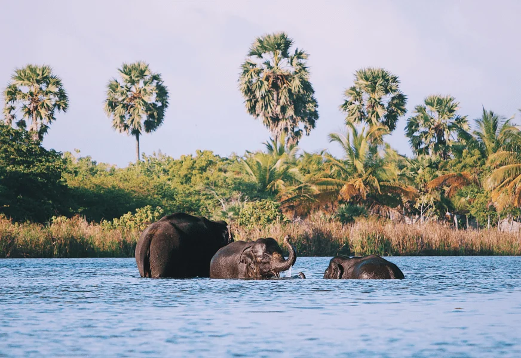

Eco Discovery
Pottuvil Lagoon
Discover the serene mangrove ecosystem through a traditional canoe safari, where wildlife and tranquil waters meet.
Discover the serene mangrove ecosystem through a traditional canoe safari, where wildlife and tranquil waters meet.
The Pottuvil Lagoon is a sprawling 200-hectare mangrove swamp, providing a sanctuary for a diverse range of wildlife. A traditional canoe safari, navigated by local fishermen, offers a silent journey through the roots of the mangroves.
As you glide through the waters, keep your eyes peeled for crocodiles sunbathing on the banks, monitor lizards swimming alongside the boat, and a kaleidoscope of birdlife including kingfishers and pelicans. In the late afternoon, you might even spot wild elephants at the water's edge.
Back to Arugam Bay Hub